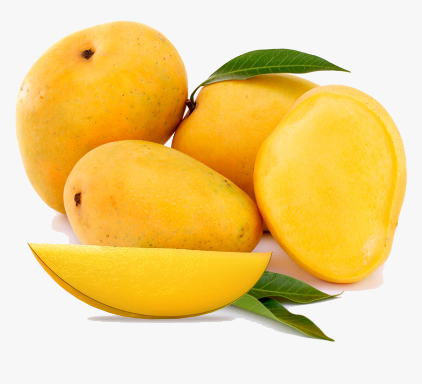

tentangbuah.com

Mangga

mangga atau mempelam adalah nama sejenis buah, demikian
pula nama pohonnya. Mangga termasuk ke dalam genus Mangifera,
yang terdiri dari 35-40 anggota dari famili Anacardiaceae.
Mangga berasal dari daerah di sekitar perbatasan India dengan Burma, dan
mangga telah menyebar ke Asia Tenggara sekitar 1500 tahun yang silam.
Mangga merupakan buah yang memiliki rasa manis dengan berbagai manfaat
kesehatan. Tak hanya lezat untuk dikonsumsi, mangga juga mempunya banyak
manfaat kesehatan seperti menyehatkan pencernaan dan memelihara
kesehatan kulit serta rambut. Di beberapa tempat di belahan dunia, buah
tropis ini mendapat julukan sebagai raja buah.
Berikut merupakan berbagai manfaat dari mangga :
- Menjaga kesehatan mata
- Kaya Antioksidan
- Meningkatkan kekebalan tubuh
- Membantu mengatasi peradangan
- Menurunkan kolestrol
- Menyehatkan pencernaan
Daftar Harga
| Jenis Mangga | Harga | |
|---|---|---|
| Per Kilo | Per Biji | |
| Mangga Harum manis | 60.000 | 6.000 |
| Mangga Indramayu | 55.000 | 5.500 |
| Mangga Golek | 40.000 | 4.000 |
| Mangga Madu | 58.000 | 5.800 |